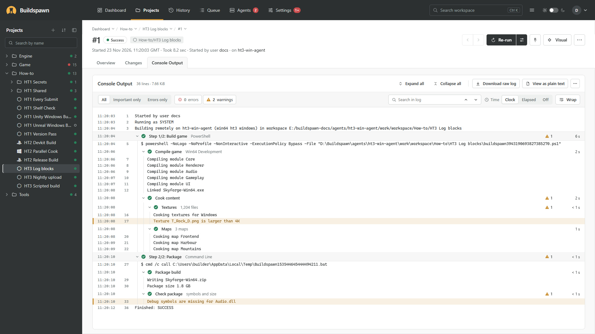

Organise your build log with blocks
Make your scripts print ::group:: lines, so a long build log turns into named blocks you can open and close, with their own times, warnings and errors.
Before you start
- You can edit a build configuration: you need the Project administrator role, or the Configure permission, on its project.
- The build configuration has a build step that runs a script, for example a PowerShell or Command Line step. See Runners.
- You know how to open the build console. See The build console.
The lines you can print
Your script only has to write these lines to its output. Each one must start the line (spaces before it are fine).
| Line | What it does |
|---|---|
::group::Name | Starts a block called Name. Blocks can sit inside blocks. |
::group::Name::Details | Starts a block and shows Details in grey after the name, for example ::group::Textures::1,204 files. |
::endgroup:: | Ends the innermost open block. |
::endgroup::FAILURE | Ends the block and marks how it ended: SUCCESS, UNSTABLE, FAILURE, ABORTED or SKIPPED. |
::warning::Text | Writes Text as a warning: a yellow line that counts in the warnings counter. |
::error::Text | Writes Text as an error: a red line that counts in the errors counter. |
Steps
- Open the build configuration and click Settings, then Build Steps.
- Click the step that runs your script to open it. To start from scratch, click Add build step and pick PowerShell or Command Line.
- In the script, print
::group::before each long task and::endgroup::after it. Use the example for your shell below. - Where your script finds a problem, print
::warning::or::error::with a short message. - Click Save.
- Click Run to start a build, then open it and click the Console Output tab.
- Click Expand all to open every block at once.
PowerShell
For a PowerShell step, or a .ps1 file the step runs:
Write-Output "::group::Compile game::Win64 Development"
foreach ($module in 'Core', 'Renderer', 'Audio', 'Gameplay', 'UI') {
Write-Output "Compiling module $module"
}
Write-Output "::endgroup::"
Write-Output "::group::Cook content"
Write-Output "::group::Textures::1,204 files"
Write-Output "::warning::Texture T_Rock_D.png is larger than 4K"
Write-Output "::endgroup::"
Write-Output "::group::Maps::3 maps"
foreach ($map in 'Frontend', 'Harbour', 'Mountains') {
Write-Output "Cooking map $map"
}
Write-Output "::endgroup::"
Write-Output "::endgroup::"Use Write-Output or Write-Host. Inside a foreach whose result you store in a variable, use Write-Host, because Write-Output would go into the variable instead of the log.
Batch (Command Line step on Windows)
@echo off
echo ::group::Package build
echo Writing Skyforge-Win64.zip
echo ::endgroup::
echo ::group::Check package::symbols and size
echo ::warning::Debug symbols are missing for Audio.dll
echo ::endgroup::SUCCESSWrite echo ::group::... with no quotes. In batch, echo prints the quotes too, so the line would start with " and not count as a marker. Start the script with @echo off, so the commands themselves are not printed as well.
Bash (Command Line step on Linux or macOS)
#!/bin/bash
set -e
echo "::group::Build server::Linux Development"
make -j"$(nproc)" server
echo "::endgroup::"
echo "::group::Run tests"
if ! ./run-tests.sh; then
echo "::error::Server tests failed"
echo "::endgroup::FAILURE"
exit 1
fi
echo "::endgroup::"Python, Node.js and any other tool work the same way: print the lines to standard output.
A block that ends in failure
Mark the block before you stop the script, so its header shows a red cross and it opens by itself:
Write-Output "::group::Upload to the build share"
if (-not (Test-Path \\fileserver\builds)) {
Write-Output "::error::Cannot reach \\fileserver\builds"
Write-Output "::endgroup::FAILURE"
exit 1
}
Write-Output "::endgroup::"Check it worked

- Your blocks appear inside the step's block, with the names you printed. Blocks inside blocks are indented.
- Each block header shows a time on the right, so you can see which part was slow.
- Your warnings have a yellow band and count in the warnings counter in the toolbar. Errors have a red band and count in errors.
- The
::group::marker text itself is not in the log. Click View as plain text: the plain log shows the block names, so it still reads well.
Troubleshooting
| Problem | What to do |
|---|---|
The line ::group::Name shows as plain text. | Something comes before :: on the line, such as a prefix your tool adds, or quotes in a batch echo. The marker must start the line. |
| Everything after one block is inside it. | A ::endgroup:: is missing, often because the script stopped early. Print ::endgroup::FAILURE before every exit inside a block. |
| PowerShell lines are missing from the log. | They went into a variable. Use Write-Host inside loops whose output you keep. |
| A block shows a red cross but the step passed. | You ended it with ::endgroup::FAILURE. The block status is only a label; the step result comes from the exit code. |
Next steps
- Find out why a build failed: use your blocks and errors to get to the problem fast.
- The build console: times, filters, search and line links.
- Service messages: set parameters and report statistics from a script with
##buildspawnlines.